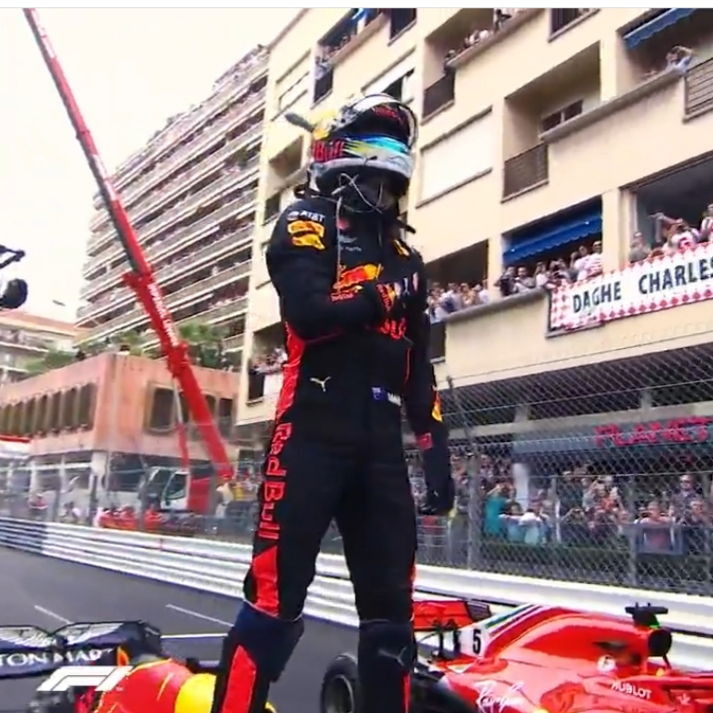

F1 Monaco Grand Prix 2021 Updates
Get up to speed with everything you need to know about the 2021 Monaco Grand Prix, which takes place over 78 laps of the 3.337-kilometre Circuit de Monaco

Schedule:
| 19 MAY |
Driver's Press Conference |
| 20 MAY |
Practice 1 |
| 20 MAY |
Practice 2 |
| 22 MAY |
Practice 3 |
| 22 MAY |
Qualifying |
| 23 MAY |
Race |
CIRCUIT DE MONACO

What tyres will the teams and drivers have for the 2021 Monaco Grand Prix?
Pirelli have announced that the softest tyres in their range will be used for the first Monaco Grand Prix since 2019, and their head of F1 and car racing Mario Isola has explained why.
The C5 tyre, the softest in Pirelli's F1 range, will be used for the first time in 2021 along with the medium C4 and hard C3 – which was the softest tyre available in Spain.
Pirelli's infographic for the 2021 Monaco GP. Min starting pressures: 17.5 psi
(front) | 17.0 psi (rear); camber limit: -4.00° (front) | -2.75° (rear)
Exciting Updates and News Coming into Race Weekend!
- F1's young star Lando Norris announces he has signed a multi year contract with McLaren coming into the Monaco Grad Prix. This looks like a great signing for both the driver and the team, as they secure and stabilise their near future
with
both drivers Lando and Daniel.
The streets of Monaco have history and heriatge written all over it when it comes to F1. To honour their heritage Mclaren have unveiled their one off retro Gulf x Mclaren livery for the race weekend. Take a look at this gorgeous livery.
Drivers Lando Norris and Daniel Ricciardo also have their customized retro lids to make the livery look more stunning than it already is!
- The McLaren drivers aren't the only ones with special lids; Hometown boy Charles Leclerc is also among a few other drivers on the grid to have a unique helmet for the 2021 Monaco Grand prix
Monaco 2021 FP1/ FP2/ FP3 Standings
| Driver |
Lap Time |
| Perez |
1:12.487 |
| Sainz |
1:12.606 |
| Verstappen |
1:12.648 |
| Gasly |
1:12.929 |
| Hamilton |
1:12.995 |
| Bottas |
1:13.131 |
| Norris |
1:13.236 |
| Vettel |
1:13.732 |
| Tsunoda |
1:13.746 |
| Raikkonen |
1:14.081 |
| Stroll |
1:14.090 |
| Giovinazzi |
1:14.106 |
| Alonso |
1:14.205 |
| Latifi |
1:14.268 |
| Ricciardo |
1:14.281 |
| Ocon |
1:14.320 |
| Mazepin |
1:14.616 |
| Mick Sch |
1:14.801 |
| Russell |
1:14.840 |
| Leclerc |
1:19.618 (Out in 4 Laps) |
| Driver |
Gap |
| Leclerc |
1:11.684 |
| Sainz |
+0.112 |
| Hamilton |
+0.390 |
| Verstappen |
+0.397 |
| Bottas |
+0.423 |
| Norris |
+0.695 |
| Gasly |
+0.814 |
| Perez |
+1.024 |
| Giovinazzi |
+1.062 |
| Vettel |
+1.298 |
| Raikkonen |
+1.381 |
| Alonso |
+1.491 |
| Stroll |
+1.511 |
| Ocon |
+1.573 |
| Ricciardo |
1:14.281 |
| Russell |
+1.825 |
| Latifi |
+1.909 |
| Mazepin |
+2.723 |
| Mick Sch |
-- |
| Tsunoda |
+3.145 |
| Driver |
Time |
| Verstappen |
1:11.294 |
| Sainz |
1:11.552 |
| Leclerc |
1:11.552 |
| Bottas |
1:11.765 |
| Perez |
1:11.817 |
| Norris |
1:11.988 |
| Hamilton |
1:12.020 |
| Raikkonen |
1:12.298 |
| Gasly |
1:12.357 |
| Vettel |
1:12.537 |
| Giovinazzi |
1:12.539 |
| Stroll |
1:12.700 |
| Ricciardo |
1:12.959 |
| Schumacher |
1:13.139 (Crashed- Out of Quali!) |
| Alonso |
1:13.329 |
| Mazepin |
1:13.390 |
| Russell |
1:13.447 |
| Latifi |
1:13.475 |
| Tsunoda |
1:13.522 |
| Ocon |
1:13.614 |
Quali Day Updates
 | 1. Mr. Monaco, Daniel Ricciardo has been having a fustrating weekend.The frustration continued in Qualifying as well as he is not able to make it to Q3. He will start at P12 on Sunday! |
2. Hometown boy, Charles Leclerc Takes his first Pole position in F1 for his home race but he ends qualifying with a session ending hard crash into the barriers. We are still anticipating a response from the Ferrari team regarding the gear box damage. Meanwhile, his teammate Carlos Sainz ends qualifying with a frustrating P4 having been really fast for all practices. The Ferrari team have only published the following statement for now:
3.Lando Norris has been superfast all weekend and is is 2 positions above the struggling car of Lewis Hamilton. His drive has been super impressive throughout Qualifying as he states "It was one of the best laps I've ever done in my career!". He starts at P5 on Sunday, a great way to start off his contract extension!
We can't wait for Sunday!
(Fill out the following Form to submit your Race day predictions)

.jpg)
.jpg)